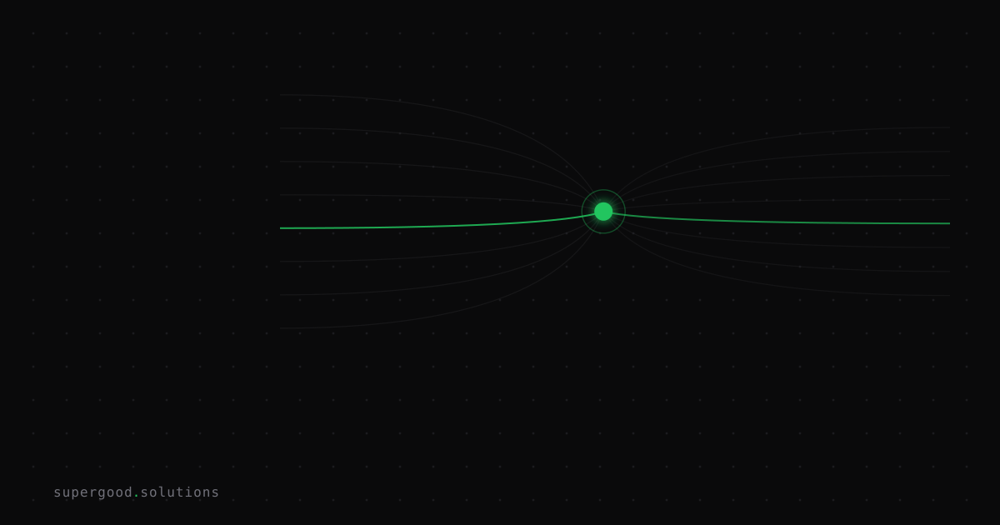

Agent Interoperability Standards Are Here. Most Pipelines Aren't Ready.
TL;DR: Cross-vendor agent communication standards landed in production in 2026 — two of them, under neutral governance — and if your team is still writing bespoke agent-to-agent glue code, you're building debt that will hurt before you ship. The window to design for these standards is now, not after your orchestration layer is in prod.
Key Insight
The agent interoperability problem is solved at the protocol layer. Teams just haven't noticed yet.
Two standards now cover the full stack of agent communication: MCP (Model Context Protocol) handles agent-to-tool connections: databases, APIs, file systems, functions. A2A (Agent2Agent Protocol) handles agent-to-agent connections: delegation, discovery, handoff between separately-built agents from different vendors or teams. Both protocols are now governed by the Linux Foundation's Agentic AI Foundation, not by Anthropic or Google, which is the part that makes them actually bet-on-able.
MCP reached broad adoption in 2025 when OpenAI and Google both adopted it after Anthropic launched it in late 2024. A2A hit v1.0 in April 2026 with 150+ supporting organizations. They're running in production at companies that decided to stop writing custom JSON-over-HTTP handshakes between their agents.
The contrarian take: most enterprise teams are treating interoperability as a future problem. It isn't. Every custom agent-to-agent wire you write today is a migration you'll own in 12 months.
Why Teams Miss This
The mistake pattern is predictable. A team picks a framework (LangGraph, CrewAI, AutoGen, their own), wires agents together using that framework's native constructs, and ships. It works. Then six months later they need to add an agent built on a different stack, or buy a vendor agent that runs somewhere else, and the custom wire breaks because it was never designed to span organizational or vendor boundaries.
The second mistake is conflating the two layers. MCP is for tools. A2A is for agents. They're not interchangeable. A team that figures out MCP for their tool integrations but ignores A2A is still writing bespoke handoff logic between agents, and vice versa. You need both, and they compose intentionally: an A2A message can carry an MCP context payload, so a delegating agent can pass tool access to the agent it hands off to.
The third mistake: treating "our agents are internal" as a reason to skip standards. Your internal agents will eventually need to talk to vendor agents, partner systems, or agents your own platform team builds independently. Designing internal protocols as if that day will never come is how you end up with a rewrite.
How to Actually Do It
The practical move is to audit your current agent communication boundaries before they calcify.
Step 1 — Map your agent graph. List every place where one agent calls, delegates to, or reads output from another agent. Note whether that connection is:
- Same process / same framework (low debt risk, but still plan for when it isn't)
- Cross-process, same vendor (moderate risk)
- Cross-vendor or cross-team (immediate architectural risk if it's not on a standard)
Step 2 — Wire new agent-to-tool connections via MCP. If you're adding a tool integration, use an MCP server. The MCP specification has a clean server SDK for Python and TypeScript. This is table stakes now — most major model providers speak it natively.
Step 3 — Design agent handoffs against the A2A schema. A2A uses an AgentCard (JSON describing what an agent can do and how to reach it) and a task-based messaging model over HTTP. Before you write a proprietary delegate call, check whether you can model it as an A2A task. The A2A spec is readable in an afternoon.
{
"id": "task-123",
"message": {
"role": "user",
"parts": [{ "text": "Summarize Q2 churn report and flag anomalies." }]
}
}That's what an A2A task looks like. If your agent-to-agent call can be expressed this way, you're already compliant. Most can.
Step 4 — Add AGNTCY if you need discovery. AGNTCY (Cisco-originated, now Linux Foundation) adds a registry layer: agents advertise capabilities, other agents find them. If your fleet is more than ~5 agents, you'll want a discovery mechanism before you're manually hard-coding agent endpoints everywhere.
Step 5 — Audit your vendor picks. Ask any agent platform vendor: "Do you speak A2A?" If they don't have an answer or it's on a distant roadmap, that's load-bearing vendor lock-in you're signing up for.
What We've Learned
The teams that move fastest on agent systems right now are the ones that design the communication layer first and pick frameworks second. Standards give you a portable communication contract. Frameworks give you execution convenience. When you flip that priority — pick the framework, inherit its wire format — you optimize for the wrong thing.
The next experiment worth running: take your most complex agent handoff today and model it as an A2A task exchange. See what breaks. If nothing breaks, you're probably already close. If the handoff requires state that doesn't fit the model, that's useful signal about where your architecture will become brittle when the fleet grows.
That gap between finished standards and unmigrated pipelines is the architectural debt window, and it closes the moment those pipelines go to production.
Sources
- A2A Protocol v1.0 spec and org list
- Google's A2A launch announcement
- MCP specification (Anthropic / Linux Foundation)
- AI Agent Interoperability Standards 2026 — gravity.fast
- AGNTCY agent infrastructure project
- Agent-to-Agent Communication: A2A, MCP, and Inter-Agent Protocols
Have a specific workflow in mind?
Bring it to a Quick Scan — a live working session where we'll tell you honestly whether it should be an agent, a workflow, or left alone, before you spend a dollar building it. You get 3 prioritized recommendations on the call, a one-page summary after, and the $500 credited toward any engagement within 30 days.
Get new posts + practical agent-ops notes
One email when something new goes up. No nurture sequence, no spam — unsubscribe whenever you want.